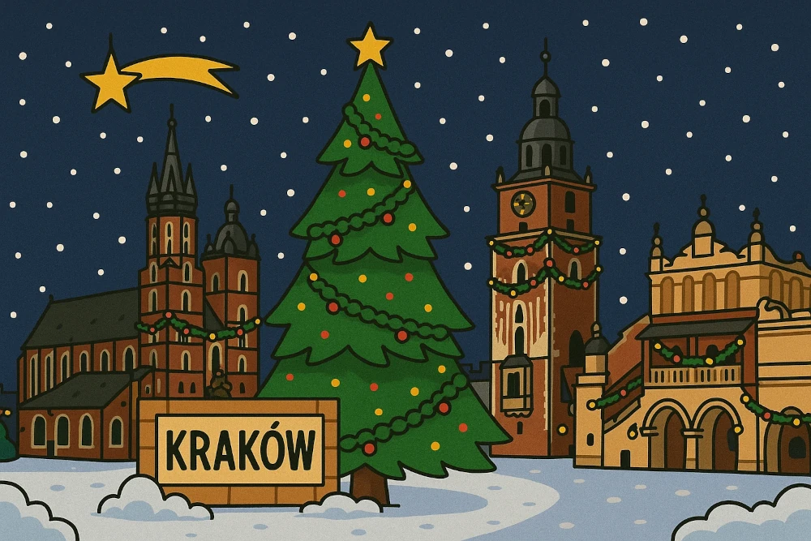
Chceš zažít opravdovou zimní atmosféru plnou světýlek, vůní a sváteční magie? Chceš se projít ulicemi, které o Vánocích vypadají jako z pohádky?
Vánoční Krakov tě okouzlí svým historickým centrem, nádhernými trhy na Hlavním náměstí i vůní svařeného vína. Projdeš se mezi dřevěnými stánky, objevíš místní řemeslné výrobky, ochutnáš tradiční polské speciality. Čeká tě nezapomenutelná vánoční nálada, která tě zahřeje, i když venku mrzne.
Láká tě nahlédnout do skutečných míst, která inspirovala svět Harryho Pottera? Chceš se projít univerzitními chodbami, kde to dýchá historií i magií?
Oxford je plný zákoutí, která připomenou Bradavice víc než cokoli jiného ve světě mudlů. Projdeš se kolem budov, jež posloužily jako předloha pro filmové kulisy, navštívíš slavnou knihovnu připomínající bradavickou studovnu.
Čeká tě jedinečná atmosféra starobylé univerzity, která tě přenese rovnou do čarodějnického světa – i bez mávnutí hůlky.
Zajímá tě Alexandrie? Chceš poznat město, které kdysi přitahovalo myslitele z celého světa a dnes žije rytmem Středomoří?
Alexandrie je směsice antických památek, přístavního života a moderních kulturních center. Projdeš se po Corniche s výhledem na moře, navštívíš impozantní Bibliothecu Alexandrinu, pocítíš atmosféru starých přístavních čtvrtí a ochutnáš čerstvé mořské plody. Město láká historií, ale zároveň řeší současné výzvy — z pobřeží vane vůně soli i změn způsobených mořem.
Zajímá tě tahle destinace? Chceš se o ní dozvědět něco víc?
Čína je země plná kontrastů – nových zážitků, kulturních střetů i nezapomenutelných chutí. Něco tě nadchne, něco tě možná zarazí. Ale nuda to rozhodně nebude.
Pojď se se mnou podívat, jak tahle komunistická velmoc ve skutečnosti funguje. Nabídnu ti svůj pohled, osobní zkušenosti a trochu nevyretušované reality.
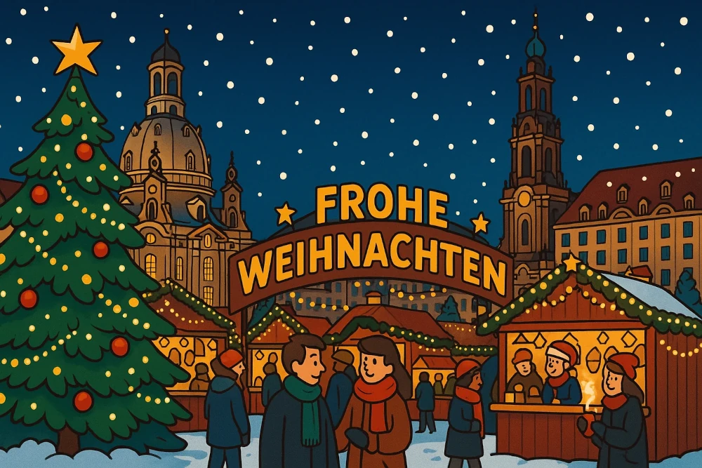
Chceš zažít kouzlo Vánoc na místě, kde adventní atmosféra doslova rozzáří celé město? Chceš se projít trhy, které patří k nejstarším a nejkrásnějším v Evropě?
Vánoční Drážďany tě okouzlí svou pohádkovou výzdobou, vůní skořice a horkého punče i malebnými uličkami historického centra. Na Striezelmarktu objevíš tradiční pochoutky, originální řemeslné výrobky a stánky plné světýlek. Užiješ si magickou vánoční atmosféru, která tě zahřeje, i když kolem sněží.
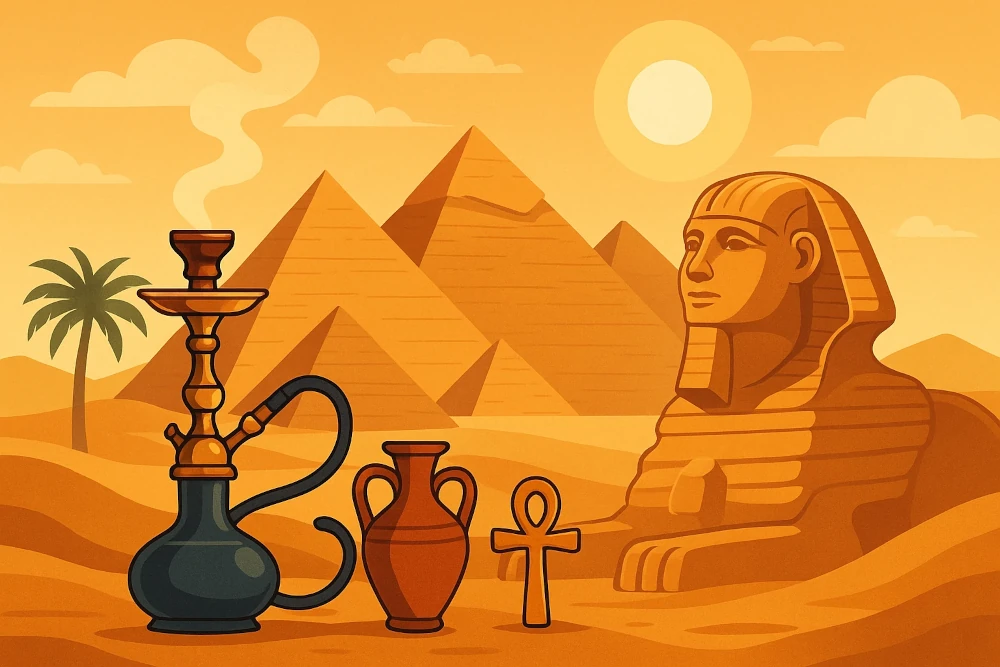
Zajímá tě Egypt? Chceš zjistit, jak to v téhle záhadami opředené zemi vypadá dnes?
Země faraonů, pyramid a žhavého slunce. Egypt je fascinující mix dávné historie a orientální atmosféry. Projdeš se mezi tisíce let starými památkami, necháš se unést vůní koření i kouřem z vodní dýmky a užiješ si koupání v teplém moři i ticho saharské pouště.
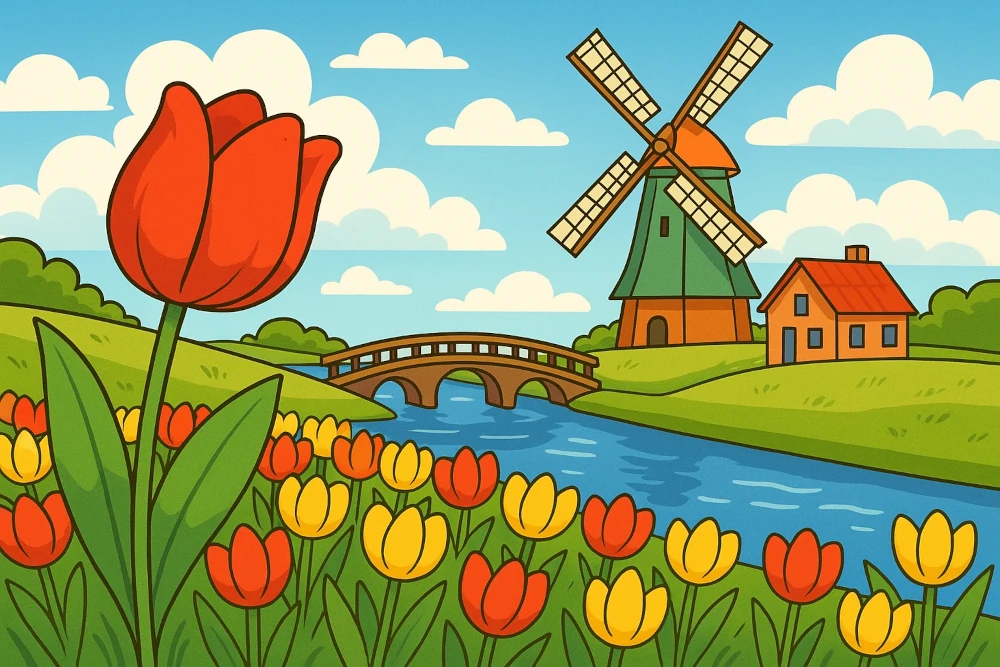
Zajímá tě, jestli jsou tulipánová pole v Holandsku opravdu tak kouzelná, jak vypadají na fotkách?
Vyrazily jsme přímo tam, kde jaro maluje krajinu těmi nejjasnějšími barvami – do Keukenhofu a okolí města Lisse. Byla to voňavá pastva pro oči, ale taky trochu realita mimo pohlednice.
Pojď se podívat se mnou: řeknu ti, co opravdu stojí za to vidět, čemu se vyhnout a proč je někdy dobré se ztratit mezi květy.
Zajímá tě Chorvatsko? Chceš zjistit, jak vypadá jeden z nejkrásnějších přírodních koutů Evropy?
Plitvická jezera jsou kouzelný svět vodopádů, tyrkysových jezer a zelených lesů. Projdeš se po dřevěných chodnících nad průzračnou vodou, obdivuješ místa známá z filmů o Vinnetouovi a zažiješ přírodu, která ti vezme dech.
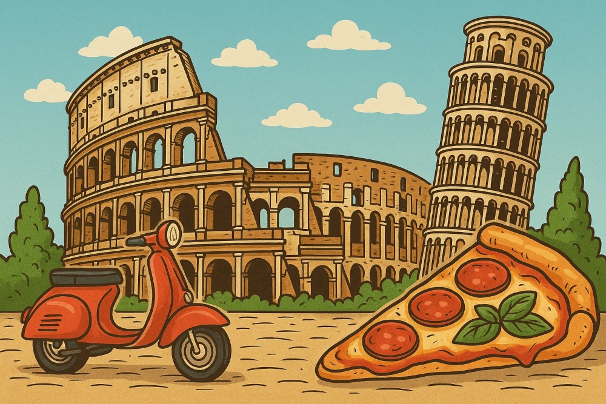
Zajímá tě Itálie? Chceš se o ní dozvědět něco víc?
Itálie je země plná krásy, historie a skvělého jídla – ale taky protikladů, překvapení a momentů k zamyšlení. Něco tě okouzlí na první pohled, něco tě možná zaskočí. Ale rozhodně tě nenechá chladným.
Pojď se se mnou podívat, jak tahle temperamentní středomořská země funguje – očima cestovatelky, bez příkras, ale s nadšením.
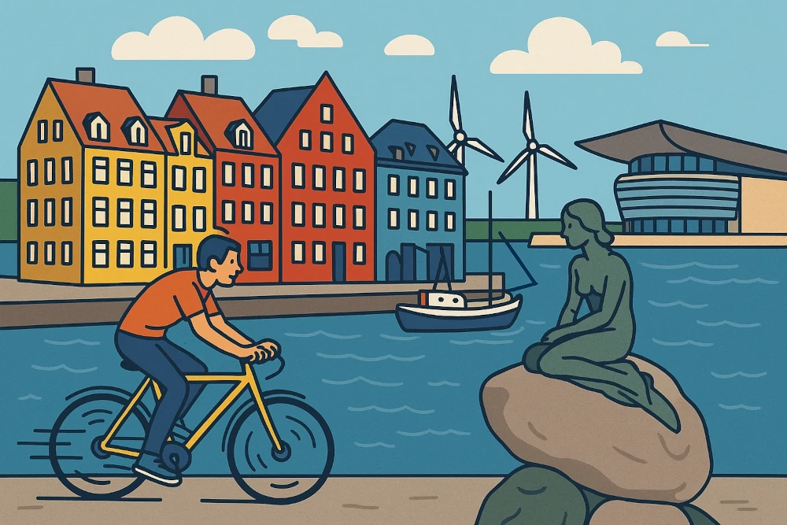
Zajímá tě tahle severská metropole? Chceš zjistit, co se skrývá za pověstí „nejšťastnějšího města na světě“?
Kodaň tě překvapí svou pohodovou atmosférou, fascinující architekturou, moderními technologiemi i důrazem na ekologii. Něco tě nadchne, něco možná zaskočí – třeba ceny nebo až přehnaná důslednost v pravidlech.
Pojď se se mnou podívat, jak tahle dánská metropole skutečně žije. Podělím se s tebou o fakta, zajímavosti i střípky, které v turistických brožurách nenajdeš.
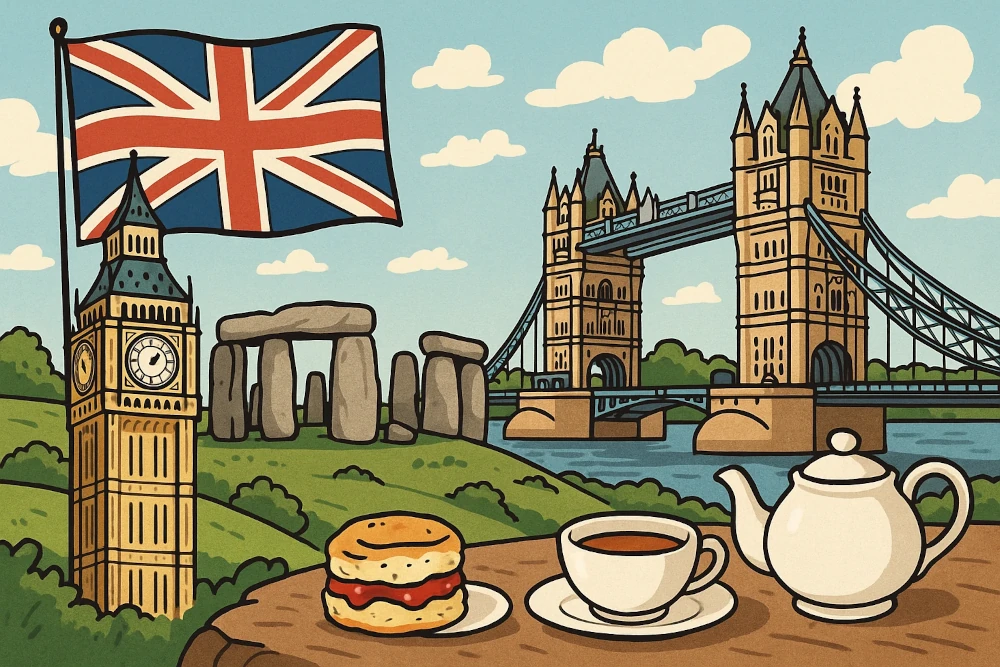
Zajímá tě Anglie? Chceš se o ní dozvědět něco víc?
Anglie je země královských tradic, zelených kopců a měst plných života – ale taky protikladů, zvláštností a překvapení, která tě možná zaskočí. Něco tě nadchne na první pohled, něco tě donutí přemýšlet. Ale rozhodně tě nenechá lhostejným.
Pojď se se mnou podívat, jak tahle fascinující země funguje – očima cestovatelky, bez příkras, ale s nadšením.
Chceš se nadechnout čerstvého horského vzduchu a zažít přírodu, která bere dech? Chceš projít místy, kde se tyrkysová jezera potkávají s ostrými štíty hor?
Vysoké Tatry tě okouzlí svými dramatickými vrcholy, průzračnými plesy i tichými horskými dolinami. Projdeš se kolem Štrbského plesa, vyjedeš lanovkou na Lomnický štít a objevíš divoké soutěsky Jánošíkových dier. Čeká tě kombinace klidu, dobrodružství a krásy, která ti zůstane v paměti ještě dlouho po návratu.
Zajímá tě historie druhé světové války? Chceš na vlastní oči vidět místo, kde se odehrála jedna z nejtemnějších kapitol lidstva?
Osvětim – symbol holocaustu, místo utrpení i nezdolného lidského ducha. Navštívíš bývalý koncentrační tábor, projdeš se mezi zachovalými baráky, uvidíš autentické exponáty a na chvíli se zastavíš v čase. Silný a nezapomenutelný zážitek, který ti změní pohled na minulost.
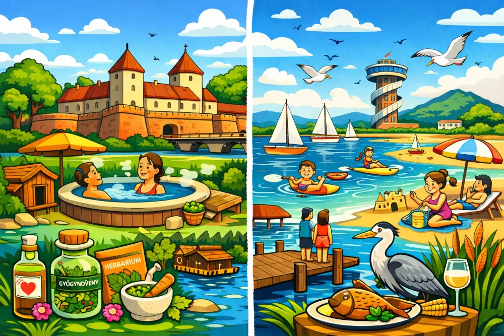
Zajímají tě termály v Maďarsku?
Chceš zjistit, jak vypadají dvě úplně odlišné tváře této pohodové země? Sárvár a Gárdony spojují klid lázní, teplo termálních pramenů a svěží atmosféru jezera. Jeden den se ponoříš do horké léčivé vody pod hradními zdmi, druhý budeš ležet na pláži u Velencei-tó, pozorovat plachetnice a užívat si letní pohodu. Čeká tě vůně bylin, šum vody, slunce nad hladinou jezera a opravdový maďarský relax.
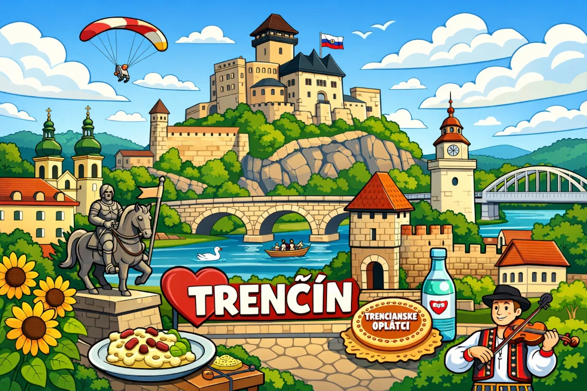
Zajímá tě Pováží? Chceš zjistit, jak to vypadá v kraji hradů, legend a divoké historie?
Trenčín, Čachtice a Beckov tvoří jedinečný trojúhelník míst, kde se středověké pevnosti tyčí nad řekou Váh a krajinou plnou vinic a lesů. Projdeš se uličkami pod majestátním Trenčianským hradem, nahlédneš do temných příběhů Čachtického hradu i Alžběty Báthory a vychutnáš si dechberoucí výhledy z ruin Beckova. Čeká tě kombinace dramatických příběhů, krásné přírody a pohodové atmosféry slovenských měst a vesnic.
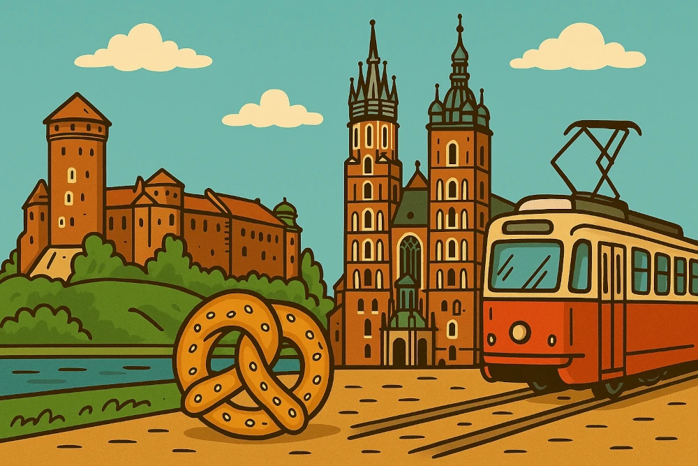
Zajímá tě tahle destinace? Chceš se o ní dozvědět něco víc?
Královská minulost se tu potkává s moderním životem, uličky starého města střídají živé bary a kavárny, a za rohem můžeš narazit na památku, která ti vyrazí dech. Něco tě nadchne, něco tě možná překvapí nebo dojme. Ale jisté je jedno – nuda tě tu nečeká.
Pojď se se mnou podívat, jak tohle historické srdce Polska opravdu vypadá. Nabídnu ti svůj pohled, osobní tipy a trochu reality bez turistických filtrů.
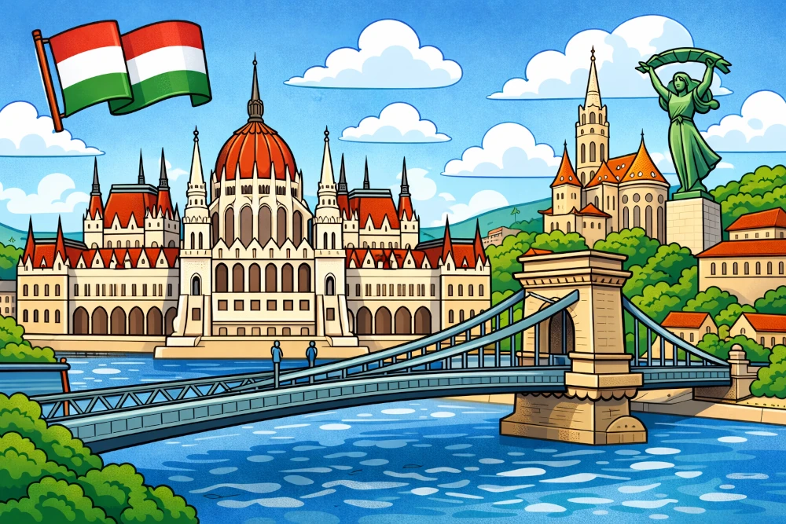
Zajímá tě Budapešť? Chceš zjistit, jak to v tomhle elegantním městě na Dunaji vypadá dnes?
Město mostů, termálních lázní a secesní krásy. Budapešť je okouzlující mix císařské historie a pulzující moderní atmosféry. Projdeš se po slavném Řetězovém mostě, odpočineš si v horkých lázních, ochutnáš voňavý guláš i sladké kürtőskalácse a necháš se unášet výhledy na hradní pahorek i noční světla nábřeží.
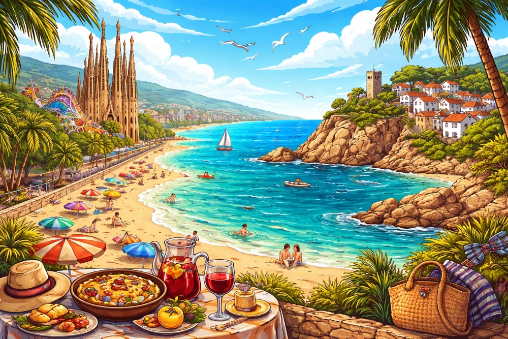
Zajímá tě Costa Brava? Chceš zjistit, kam vyrazit z Barcelony za mořem, klidem i krásnou přírodou?
Blanes je místo, kde se střetává středomořská pohoda s divokým pobřežím severního Španělska. Čekají tě dlouhé pláže, skalnaté útesy, výhledy na nekonečné moře i vůně borovic a soli ve vzduchu. Projdeš se starým městem, vychutnáš si čerstvé mořské plody a zpomalíš v rytmu katalánského pobřeží.
Zajímá tě Londýn? Chceš se o něm dozvědět něco víc?
Londýn je město plné historie, ikonických památek a kulturní rozmanitosti – ale také kontrastů, zvláštností a okamžiků, které tě donutí přemýšlet. Něco tě okouzlí na první pohled, něco tě možná překvapí. Ale rozhodně tě nenechá lhostejným.
Pojď se se mnou podívat, jak tahle britská metropole žije – očima cestovatelky, bez příkras, ale s nadšením.
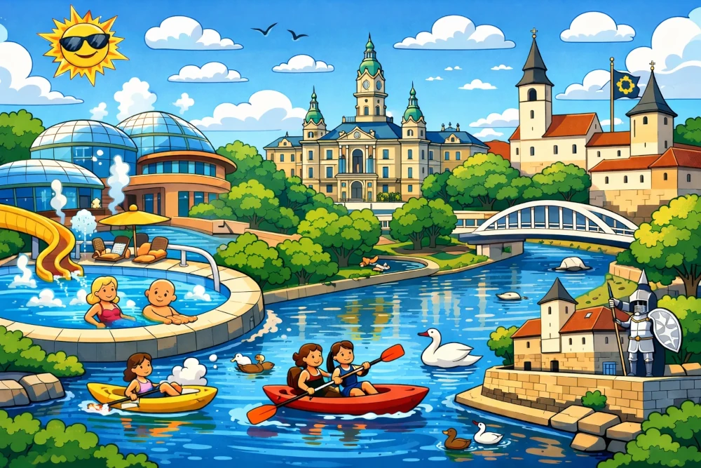
Chceš zarelaxovat? Poznat město, kde se historie prolíná s relaxem u termálních pramenů?
Město tří řek, barokních paláců a horkých lázní. Győr je okouzlující směs starobylé architektury, klidných nábřeží a moderního lázeňského života. Projdeš se romantickými uličkami, vykoupeš se v termální vodě a užiješ si pohodovou atmosféru jednoho z nejkrásnějších měst Maďarska.
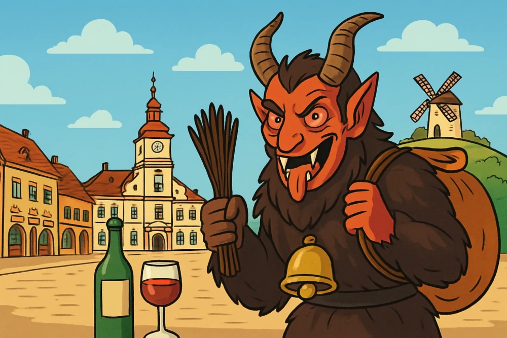
Máš rád tajemno, tradice a trochu adrenalinu? Chceš na vlastní oči vidět, jak to vypadá, když peklo vtrhne do ulic?
Retz tě okouzlí nejen svým historickým centrem a vinnými sklepy, ale hlavně děsivě působivým čertovským průvodem. Krampusové v masce, řetězech a rohatých helmách dávají tradičním Vánocům zcela nový rozměr. Přidej se k davům, které se scházejí z širokého okolí, a zažij autentický kus rakouské lidové kultury, kde se víno mísí s peklem.
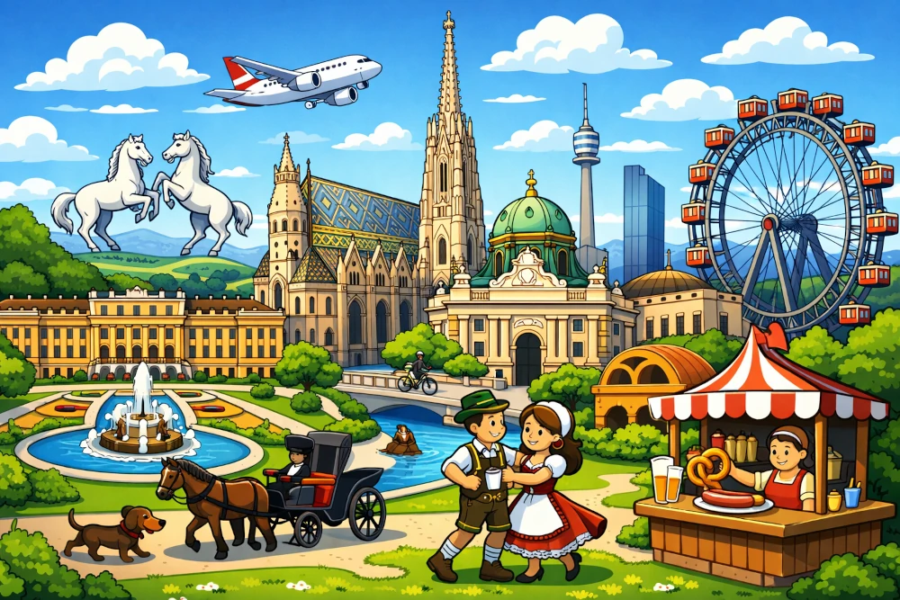
Zajímá tě Vídeň? Chceš zjistit, jak vypadá jedno z nejkrásnějších měst Evropy dnes?
Město císařů, hudby a elegantních bulvárů. Vídeň je okouzlující mix honosné historie a moderního životního stylu. Projdeš se kolem císařských paláců, posedíš v tradiční kavárně u šálku melange, necháš se unést tóny Mozarta i pouličních hudebníků a objevíš město, kde se noblesa snoubí s pohodovou atmosférou.